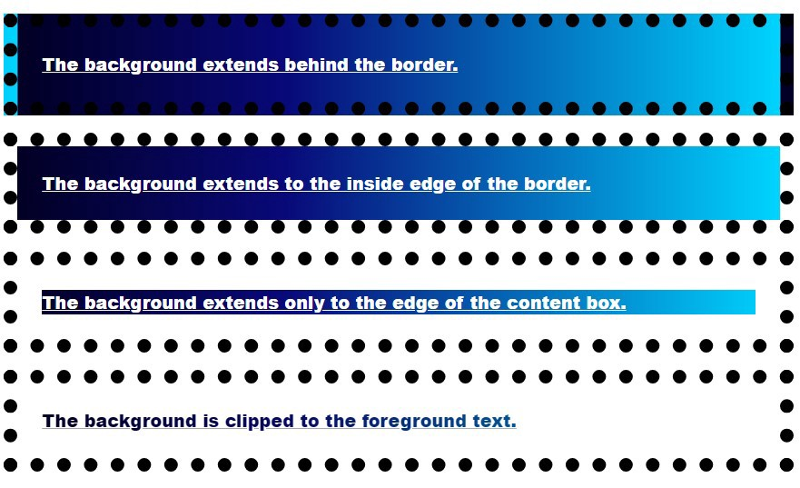
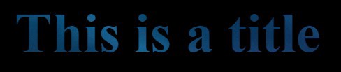
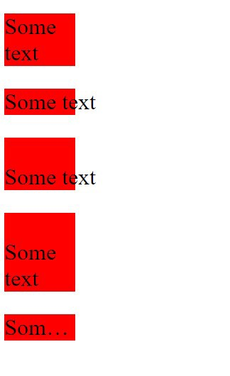
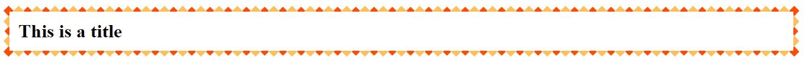

6 个没人讲过的 CSS 属性

数十年来，CSS 和 HTML 一直都是互联网的基石。
虽然 HTML 能够负责创建网站结构并进行图文排列，但在设计网站上却无能为力。
自 1994 年以来，设计网站一直是 CSS 的唯一目的，它是一门描述网站外观的语言。
多年来，CSS 不断地推出更多的新属性，例如 Flexbox（弹性盒）或是 Grid（网格）。
尽管创建 Web 应用广受欢迎且日趋复杂，但大多数开发者仍有很多不了解的 CSS 属性和技巧。
以下是你可能从未听说过的 6 个 CSS 属性：
1. all
你是否曾经使用过 CSS 框架呢？如果是的话，我可以肯定你有好几次都想要根据自己的喜好覆盖某些元素的样式定义。
最常用的方法是使用 CSS 中的 !important 属性来强调当前属性，而忽略所有其他设置和规则。
.header {
color: blue !important;
font-size: 14px !important;
}
但是，重复书写相同的关键字会让 CSS 文件看起来很混乱。
而一个更简单的覆盖样式定义的方法，是使用 all 属性。
all 共有 3 个可用的属性值 —— initial、inherit 和 unset。
.header {
all: initial;
color: blue;
font-size: 14px;
}
all: initial 会将元素的所有属性设置为回退值或初始值。
从 Chrome 版本 37 和 Firefox 版本 27 开始它们都支持了这个属性。Edge 浏览器也支持此属性，但 IE 并不支持。
2. writing-mode
我最近写过一篇有关寻找设计灵感的神奇地方的文章，里面列举的网站和我偶然发现的许多站点中，文本都是在一侧竖直排列的。

在上图的右侧（滚动条附近），我们可以看到侧边竖直排列的文本，而这恰好就是一种显示附加信息的巧妙方法。
writing-mode 属性可以让我们实现这个效果。
该属性支持以下值：
sideways-rl：文本和其他内容从上到下垂直排列，并向右横向放置。sideways-lr：和sideways-rl一样，文本和其他内容从上到下垂直排列，但向左倾斜。vertical-rl：文本和其他内容从上到下垂直排列，从右到左水平排列。如果有两行或更多行，则这些行会被放置在前一行的左侧。vertical-lr：与vertical-rl不同，水平地将文本从左到右排列，并且如果有两行或更多行，则这些行会被放置在前一行的右侧。
horizontal-tb 属性则实现默认排列文本的效果。

你可以在这里找到相关实现和代码块。
3. background-clip
这是一个有趣的属性，它让我们可以为元素的背景设置自定义图形。
我们的自定义图形可以延伸到元素的边框，内边距盒或内容盒。
以下是此属性的简短实现：
HTML：
<p class="border-box">背景延伸到边框。</p>
<p class="padding-box">背景延伸到边框的内部边缘。</p>
<p class="content-box">背景仅延伸到内容盒的边缘。</p>
<p class="text">背景被裁剪为前景文本。</p>
CSS：
p {
border: .8em darkviolet;
border-style: dotted double;
margin: 1em 0;
padding: 1.4em;
background: linear-gradient(60deg, red, yellow, red, yellow, red);
font: 900 1.2em sans-serif;
text-decoration: underline;
}
.border-box {
background-clip: border-box;
}
.padding-box {
background-clip: padding-box;
}
.content-box {
background-clip: content-box;
}
.text {
background-clip: text;
-webkit-background-clip: text;
color: rgba(0, 0, 0, .2);
}
效果：

我们也可以使用自定义图片作为文本的背景：

值得注意的是，在 Chrome 上我们需要使用 -webkit-background-clip 属性，并确保文本颜色设置为透明。
4. user-select
如果我们的网站上有着一些不想让用户复制的文本，我们可以使用此属性。
user-select 属性指定是否可以选择元素的文本。
这对除文本框之外的内容没有任何影响。
.row-of-icons {
-webkit-user-select: none; /* Chrome & Safari all */
-moz-user-select: none; /* Firefox all */
-ms-user-select: none; /* IE 10+ */
user-select: none;
}
此属性也可用于确保选择了整个元素。
.force-select {
user-select: all;
-webkit-user-select: all; /* Chrome 49+ */
-moz-user-select: all; /* Firefox 43+ */
}
你可以在这里找到完整的说明。
5. white-space
在使用 text-overflow 的时候，该属性非常有用，因为它允许我们控制元素的文本流。
它接受 nowrap、pre、pre-wrap、pre-line 和 normal 作为属性值。
nowrap 可防止文本环绕在元素的宽度和高度内，并使其溢出。
pre 值强制浏览器渲染代码中默认会去除的换行符和空格。pre-wrap 值和 pre 值作用相同，但是它不会让文本溢出元素。
pre-line 属性会在代码中相应的地方换行，但是不会显示多余的空格。
通过以下示例可以清楚地看出它们的区别：
HTML:
<div>
<p class='zero'>
Some text
</p>
<p class='first'>
Some text
</p>
<p class='second'>
Some text
</p>
<p class='third'>
Some text
</p>
<p class='fourth'>
Some text
</p>
</div>
CSS:
div {
width: 100px;
}
p {
background: red;
font-size: 2rem;
}
.first {
white-space: nowrap;
}
.second {
white-space: pre;
}
.third {
white-space: pre-line;
}
.fourth {
white-space: nowrap;
text-overflow: ellipsis;
overflow: hidden;
}
效果:

6. border-image
此属性非常适合设计我们的网站，我们可以使用此属性在元素周围创建漂亮的边框 —— border-image 允许你将自定义图像设置为边框。
下面的图像就展示了这个属性的应用：

HTML 和 CSS 代码如下：
<body>
<h1>This is a title</h1>
</body>
h1 {
border: 10px solid transparent;
padding: 15px;
border-image: url(border.png) 20% round;
}
效果:

此属性可用于创建精美卡片或强调部分文本。
最后的想法
前端开发者们除了使用 JavaScript 之外，还同时使用着 CSS 和 HTML。了解更多的 CSS 属性知识，能够帮助我们更快、更好地构建 Web 应用程序。
尽管我分享了一些较少被人们所提及的 CSS 属性，但这样的属性还有很多。
虽然 CSS 已有 20 多年的历史了，但它仍然具有许多奇技淫巧。
知道这些 CSS 属性可以实现具有艺术气息的网站。
感谢阅读！
如果发现译文存在错误或其他需要改进的地方，欢迎到 掘金翻译计划 对译文进行修改并 PR，也可获得相应奖励积分。文章开头的 本文永久链接 即为本文在 GitHub 上的 MarkDown 链接。
掘金翻译计划 是一个翻译优质互联网技术文章的社区，文章来源为 掘金 上的英文分享文章。内容覆盖 Android、iOS、前端、后端、区块链、产品、设计、人工智能等领域，想要查看更多优质译文请持续关注 掘金翻译计划、官方微博、知乎专栏。